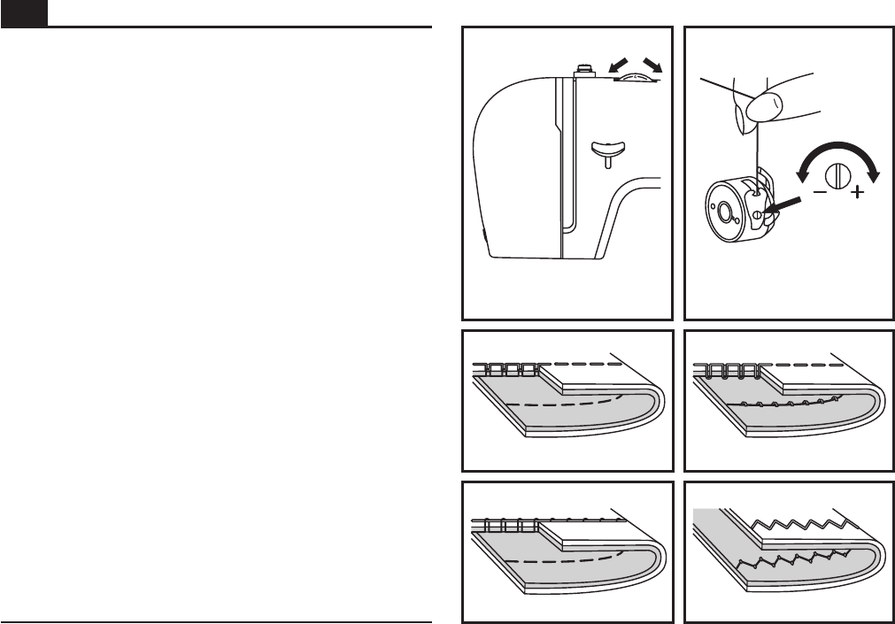
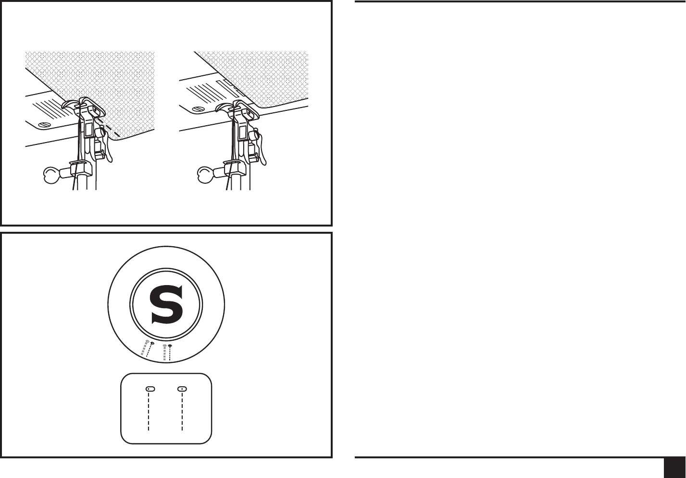
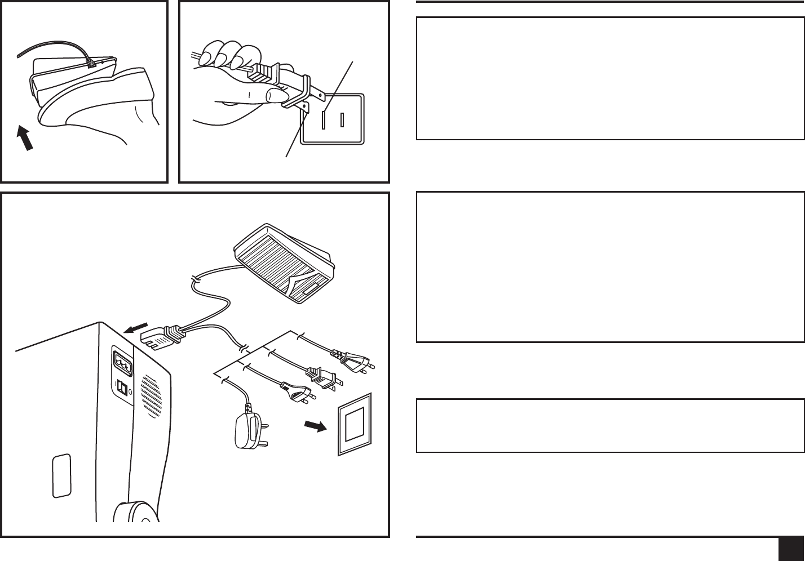

2259 Instruction Manual
When using an electrical appliance, basic safety should always be
followed, including the following:
Read all instructions before using this sewing machine.
1. An appliance should never be left unattended when plugged in.
2. Always unplug this appliance from the electric outlet immediately
after using and before cleaning.
3. Always unplug before re-lamping. Replace bulb with same type
rated 10 watts
1. Do not allow to be used as a toy. Close attention is necessary when
this appliance is used by or near children.
2. Use this appliance only for its intended use as described in this
manual. Use only attachments recommended by the manufacturer
as contained in this manual.
3. Never operate this appliance if it has a damaged cord or plug, if it is
not working properly, if it has been dropped or damaged, or dropped
into water. Return the appliance to the nearest authorized dealer or
service center for examination, repair, electrical or mechanical
adjustment.
4. Never operate the appliance with any air openings blocked. Keep
ventilation openings of the sewing machine and foot controller free
from accumulation of lint, dust, and loose cloth.
5. Keep fingers away from all moving parts. Special care is required
around the sewing machine needle.
6. Always use the proper needle plate. The wrong plate can cause the
needle to break.
7. Do not use bent needles.
8. Do not pull or push fabric while stitching. It may deflect the needle
causing it to break.
9. Switch the sewing machine off ("O") when making any adjustments in
the needle area, such as threading needle, changing needle,
threading bobbin, or changing presser foot, and the like.
10. Always unplug sewing machine from the electrical outlet when
removing covers, lubricating, or when making any other user
servicing adjustments mentioned in the instruction manual.
11. Never drop or insert any object into any opening.
12. Do not use outdoors.
13. Do not operate where aerosol spray products are being used or
where oxygen is being administered.
14. To disconnect, turn all controls to the off ("O") position, then remove
plug from outlet.
15. Do not unplug by pulling on cord. To unplug, grasp the plug, not the
cord.
This sewing machine is intended for household use only.
DANGER
SAVE THESE INSTRUCTIONS
- To reduce the risk of electric shock:
(110-120V area) or 15 watts (220-240V area).
16. The sound pressure level under normal operating conditions is
75dB(A).
17. Please turn off the machine or unplug when the machine is not
operating properly.
18. Never place anything on the foot controller.
19. If the supply cord that is fixed with foot controller is damaged, it must
be replaced by the manufacturer or its service agent or a similar
qualified person in order to avoid a hazard.
20. This appliance is not intended for use by persons (including children)
with reduced physical, sensory or mental capabilities, or lack of
experience and knowledge, unless they have been given
supervision or instruction concerning use of the appliance by a
person responsible for their safety.
21. Children should be supervised to ensure that they do not play with
the appliance.
WARNING - To reduce the risk of burns, fire, electric
shock, or injury to persons:
IMPORTANT SAFETY INSTRUCTIONS
GB
Congratulations
As the owner of a new Singer sewing machine, you are about to begin an exciting adventure in
creativity. From the moment you first use your machine, you will know you are sewing on one
of the easiest to use sewing machines ever made.
May we recommend that, before you start to use your sewing machine, you discover the many
features and the ease of operation by going through this instruction book, step by step, seated
at your machine.
To ensure that you are always provided with the most modern sewing capabilities, the
manufacturer reserves the right to change the appearance, design or accessories of this
sewing machine when considered necessary.
SINGER is a registered trademark of The Singer Company Limited or its affiliates.
© 2009 The Singer Company Limited or its affiliates. All rights reserved.
GB
Machine Basics
Threading the Machine
Sewing
General Information
Maintenance and Troubleshooting
Principle Parts of the Machine..............................................................................................................................................2/3
Connecting Machine to Power Source ....................................................................................................................................4
Two Step Presser Foot Lifter...................................................................................................................................................5
Accessories .............................................................................................................................................................................6
Winding the Bobbin .................................................................................................................................................................7
Inserting the Bobbin ................................................................................................................................................................8
Thread Tension .......................................................................................................................................................................9
Threading the Upper Thread .................................................................................................................................................10
Raising the Bobbin Thread....................................................................................................................................................11
How to Choose Your Pattern.................................................................................................................................................12
Stitch Length Dial ..................................................................................................................................................................13
Sewing Straight Stitch ...........................................................................................................................................................14
Reverse Sewing/ .....................................................................................................15
Choosing Stretch Stitch Patterns ..........................................................................................................................................16
Blind Hem..............................................................................................................................................................................17
Buttonholes ...........................................................................................................................................................................18
Sewing on Buttons ................................................................................................................................................................19
Installing the Removable Extension Table ............................................................................................................................20
Attaching the Presser Foot Shank.........................................................................................................................................21
Needle/Fabric/Thread Chart..................................................................................................................................................22
Darning Plate.........................................................................................................................................................................23
Inserting & Changing Needle ................................................................................................................................................24
Changing the Bulb.................................................................................................................................................................25
Troubleshooting Guide ..........................................................................................................................................................26
Removing the Work/Cutting the Thread
List of contents
GB
Principal Parts of the Machine
2
1. Thread tension dial
2. Thread take-up lever
3. Thread cutter
4. Presser foot
5. Needle plate
6. Removable extension table/ accessory storage
7. Reverse sewing lever
8. Bobbin stopper
9. Stitch length dial
10. Pattern selector dial
1
2
3
4
5
6
7
8
10
9
GB
3
11. Horizontal spool pin
12. Bobbin winding spindle
13. Hole for second spool pin
14. Handwheel
15. Power and light switch
16. Main plug socket
17. Bobbin thread guide
18. Upper thread guide
19. Face plate
20. Handle
21. Presser foot lifter
22. Foot speed control
23. Power cord
22
23
15
16
17
18
19
21
20
11
12
14
13
GB
Principal Parts of the Machine
1
A
23
Connecting Machine to Power Source
4
Connect the machine to a power source as illustrated. (1)
This appliance is equipped with a polarized plug which must
be used with the appropriate polarized outlet. (2)
Unplug power cord when machine is not in use.
The foot control pedal regulates the sewing speed. (3)
Consult a qualified electrician if in doubt of how to connect
machine to power source.
Unplug power cord when machine is not in use.
The foot control must be used with the appliance by KD-
1902 / (110-120V area) / KD-2902 (220-240V area)
manufactured by ZHEJIANG FOUNDER MOTOR
CORPORATION LTD. (China)
Press main switch (A) to " l " for power and light.
For appliance with a polarized plug (one blade is wider
than the other). To reduce the risk of electric shock, this
plug is intended to fit in a polarized outlet only one way. If
it does not fit fully in the outlet, reverse the plug. If it still
does not fit, contact a qualified electrician to install the
proper outlet. Do not modify the plug in any way.
Attention:
Foot control
Attention:
Sewing light
IMPORTANT NOTICE
FC-1902
Polarized attachment plug
Conductor intended
to be grounded
GB
A
Two Step Presser Foot Lifter
5
When sewing several layers or thick fabrics, the presser foot
can be raised for easy positioning of the
work. (A)
to a higher position
GB
Standard a
Optional accessories (2)
ccessories (1)
a. All purpose foot
Buttonhole foot
Button sewing foot
L-screwdriver
Seam ripper/ brush
g. Oil bottle
Pack of needles
Bobbin (3x)
Edge/ quilting guide
l. Spool holder
(These 8 accessories are not supplied with this machine; they
are however available as special accessories from your local
dealer.)
m. Quilting/ straight stitch foot
n. Overcasting foot
o. Hemmer foot
p. Blind hem foot
q. Satin stitch foot
r. Darning/ embroidery foot
s. Second spool pin
t. Spool pin felt
b. Zipper foot
c.
d.
e.
f.
h.
i.
j.
k. Darning plate
mn o p
q
r
s
t
6
i
j
k
l
g
e
f
a
b
c
d
006806008 006905008
006909008
006914008
1
2
006803008
006800008
006016008
006812008
006916008
006804008
Standard accessories
Optional accessories
Accessories
GB
h
1
2
4
7
8
9
5
6
3
10
Winding the Bobbin
- corresponding .
(1/2)
- Snap thread into thread guide. (3)
- Wind thread counterclockwise around bobbin winder
tension discs. (4)
- Thread bobbin as illustrated and place on spindle. (5)
- Push bobbin spindle to right. (6)
- Hold thread end. (7)
- Step on foot control pedal. (8)
- Cut thread. (9)
- Push bobbin spindle to left (10) and remove.
When the bobbin winder spindle is in "bobbin winding"
position, the machine will not sew and the hand wheel will
not turn. To start sewing, push the bobbin winder spindle to
the left (sewing position).
Please Note:
Place thread and spool holder on to spool pin
7
GB
12
6
3
4
5
a
Inserting the Bobbin
When inserting or removing the bobbin, the needle must
be fully raised.
Attention:
- Remove the extension table, then open the hinged cover. (1)
- Pull the bobbin case tab (a) and remove the bobbin case. (2)
- Hold the bobbin case with one hand. Insert the bobbin so
that the thread runs in a clockwise direction (arrow). (3)
- Pull the thread through the slit and under the finger. (4)
Leave a 6 inch tail of thread.
- Hold the bobbin case by the hinged latch. (5)
- Insert it into the shuttle. (6)
Turn power switch to off ("O") before inserting or removing
the bobbin.
8
GB

BA
C
D
12
Thread Tension
Upper thread tension (1)
Lower thread tension (2)
Please note:
Basic thread tension setting: "4"
To increase the tension, turn the dial to the next number up.
To reduce the tension, turn the dial to the next number down.
A. Normal thread tension for straight stitch sewing.
B. Thread tension too loose for straight stitch sewing. Turn
dial to higher number.
C. Thread tension too tight for straight stitch sewing. Turn dial
to lower number.
D. Normal thread tension for zig zag and decorative sewing.
Correct thread tension is when a small amount of the upper
thread appears on the bottom side of fabric.
To test the bobbin thread tension, remove the bobbin case
and bobbin and hold it by suspending it by the thread. Jerk it
once or twice. If the tension is correct, the thread will unwind
by about an inch or two. If the tension is too tight, it does not
unwind at all. If the tension is too loose, it will drop too much.
To adjust, turn the small screw on the side of the bobbin case.
- Proper setting of tension is important to good sewing.
- There is no single tension setting appropriate for all stitch
functions, thread or fabric.
- A balanced tension (identical stitches both top and bottom)
is usually only desirable for straight stitch construction
sewing.
- 90% of all sewing will be between "3" and "5".
- For zig zag and decorative sewing stitch functions, thread
tension should generally be less than for straight stitch
sewing.
- For all decorative sewing you will always obtain a nicer stitch
and less fabric puckering when the upper thread appears on
the bottom side of your fabric.
9
GB
This is a simple operation but it is important to carry out correctly
as by not doing so .
- Start by raising the needle to its highest point (1), and
continue turning the handwheel counterclockwise until the
needle just slightly begins to descend. Raise the presser foot
to release the tension discs.
For safety, it is strongly suggested you turn off the
power before threading.
- Lift up the spool pin. Place the spool of thread on the holder
with the thread coming off the spool as shown. For small
thread spools, place small side of spool holder next to spool.
(2)
- Draw thread from spool through the upper thread guide (3)
and pull thread through pre-tension spring as illustrated. (4)
- Thread tension module by leading thread down right channel
and up left channel. (5) During this process it is helpful to hold
the thread between the spool and thread guide.
- At the top of this movement pass thread from right to left
through the slotted eye of the take-up lever and then
downwards again. (6)
-
(8)
several sewing problems could result
Note:
Now pass thread behind the thin wire needle clamp guide (7)
and then down to the needle which should be threaded from
front to back.
- Pull about 6-8 inches of thread to the rear beyond the needle
eye. Trim thread to length with built in thread cutter.
10
2
1
6
8
7
5
3
4
Threading the Upper Thread
1
2
4
7
5
6
8
3
GB
11
1
2
3
Raising the Bobbin Thread
Hold the upper thread with the left hand. Turn the handwheel
(1) towards you (counterclockwise) lowering, then raising
needle.
If it is difficult to raise the bobbin thread, check to make sure
the thread is not trapped by the hinged cover or the
Removable Extension Table.
Gently pull on the upper thread to bring the bobbin thread up
through the needle plate hole. (2)
Lay both threads to the back under the presser foot. (3)
Note:
GB
The diagram on this page displays the stitch patterns
available on the machine.
Stitches in the top row of the diagram are indicated on the
Pattern Selector Dial in black. To select the patterns indicated
with the black color, turn the Pattern Selector Dial. (c) Then,
use the Stitch Length Dial (b) to adjust the stitch length as
desired for the project.
Stitches in the bottom row of the diagram are indicated on
the Pattern Selector Dial in blue. The blue indicates that the
stitch is a stretch stitch pattern, and information on how to
sew these stretch patterns is on page 16.
The Pattern Selector Dial may be turned in either direction.
a. Reverse Sewing Lever
b. Stitch Length Dial
c. Pattern Selector Dial
How to Choose Your Pattern
12
ab
c
S1
GB
13
Function of stitch length dial for straight stitching
Function of stitch length dial while zig-zag stitching
For straight stitch sewing, turn the Pattern Selector Dial to
the straight stitch setting. (1) Turn the Stitch Length Dial, and
the length of the individual stitches will decrease as the dial
approaches "0". The length of the individual stitches will
increase as the dial approaches "4". (2) Generally speaking,
use a longer stitch length when sewing heavier weight
fabrics or when using a thicker needle or thread. Use a
shorter stitch length when sewing lighter weight fabrics or
when using a finer needle or thread.
The density of zig-zag stitches increase as the setting of
stitch length dial approaches "0".
Neat zig-zag stitches are usually achieved at "2.5" or below.
Dense zig-zag stitches are called satin stitches. (4)
Turn the Pattern Selector Dial to " ". (3)
Stitch Length Dial
3
21
4
0.5
3
4
3
2
1
0.5
4
12
GB
14
Sewing Straight Stitch
1
2
3
To begin sewing, set the machine for straight stitch in either
center or right needle position. (1)
Place the fabric under the presser foot with the fabric edge
lined up with the desired seam guide line on the needle plate.
(2)
Lower the presser foot lifter, and then step on the foot
controller to start sewing. (3)
GB
Turn the handwheel toward you (counterclockwise) to bring
the thread take up lever to its highest position, and continue
turning until the needle just slightly begins to descend. Raise
the presser foot and remove work behind the needle and
presser foot. (2)
15
1 2
A
Removing the Work
Cutting the Thread
Reverse Sewing
To secure the beginning and the end of a seam, press down
the reverse sewing lever (A). Sew a few reverse stitches.
Release the lever and the machine will sew forward again. (1)
Pull the threads under and behind the presser foot. Guide
the threads to the side of the face plate and into thread cutter
(B). Pull threads down to cut. (3)
3
B
GB
The Stretch Stitch Patterns are indicated with a blue color on
the Pattern Selector Dial. To select these stitches, turn the
Pattern Selector Dial to the desired pattern. Then, turn the
Stitch Length Dial to the indicator marked "S1". Though there
are several stretch patterns, here are two examples:
Set the Pattern Selector Dial to " ".
Used to add triple reinforcement to stretch and hardwearing
seams.
The machine sews two stitches forward and one stitch
backwards.
Set the Pattern Selector Dial to " ".
Ric Rac Stitch is suitable for firm fabrics like denim, corduroy,
poplin, duck, etc.
Straight Stretch Stitch
Ric Rac
16
Choosing Stretch Stitch Patterns
1
2
GB

For hems on curtains, trousers, skirts, etc.
Blind hem for stretch fabrics.
Blind hem for firm fabrics.
Sew a test first to
make sure the machine settings are appropriate for the fabric.
Blind Hem:
Set the Stitch Length Dial with the range shown on the
diagram at the right. Blind hems, however, are normally
sewn with a longer stitch length setting.
Turn up the hem to the desired width and press. Fold back
(as shown in Fig. 1) against the right side of the fabric with
the top edge of the hem extending about 7 mm (1/4") to the
right side of the folded fabric.
Start to sew slowly on the fold, making sure the needle
touches slightly the folded top to catch one or two fabric
threads. (2)
Unfold the fabric when hemming is completed and press.
To make blind hem sewing even easier, use a blind hem
foot, available from your SINGER retailer. (See page 6
for part number)
Note:
®
17
Blind Hem
2
1
GB
Prepare
Note:
Tips:
1. Take off the all purpose foot and attach the buttonhole
foot.
2. Measure diameter and thickness of button and add 0.3
cm (1/8") for bar tacks; mark buttonhole size on fabric.
3. Place fabric under the foot, so that marking on the
buttonhole foot aligns with starting marking on fabric.
Lower the foot, so that the buttonhole center line marked
on the fabric aligns with the center of the buttonhole foot.
Adjust the Stitch Length Dial in the " " to set stitch density.
Density varies according to the fabric.
Always test sew a buttonhole on the fabric you are using
to sew the buttonhole.
Follow the 4-step sequence changing from one step to
another with the Pattern Selector Dial. When moving from
step to step through the buttonhole process, be sure that the
needle is raised before turning the Pattern Selector Dial to
the next step. Take care not to sew too many stitches in
steps 2 and 4. Use seam ripper and cut buttonhole open
from both ends towards the middle.
- Slightly reducing upper thread tension will produce better
results.
- Use a stabilizer for fine or stretchy fabrics.
- It is advisable to use heavy thread or cord for stretch or knit
fabrics. The zig-zag should sew over the heavy thread or
cord. (A)
18
Buttonholes
A
1
3
4
2
GB
19
Sewing on Buttons
Install the darning plate. (1)
Change the all purpose foot to button sewing foot. (2)
Position the work under the foot.
Place the button in the desired position and lower the foot.
Set the Pattern Selector Dial on " " and sew a few securing
stitches. Select one of the two narrow zig-zag patterns
according to the distance between the two holes of the button.
Turn the handwheel to check if the needle goes into the right
and the left hole of the button without hitting the button. Slowly
sew on the button with about 10 stitches.
Select pattern " " and sew a few securing stitches. (3)
If a shank is required, place a darning needle on top of the
button and sew. (4)
For buttons with 4 holes, sew through the front two holes first,
push the work forward and then sew through the back two
holes.
4
3
1 2
GB
2
Installing the Removable Extension Table
Hold the removable extension table horizontally, and push it
in the direction of the arrow. (1)
To remove the Extension Table, pull it toward the left.
The inside of the removable extension table can be utilized
as an accessory box.
To open, flip cover down as shown. (2)
20
1
GB
Raise the presser bar (a) with the presser foot lifter. Attach
the presser foot shank (b) as illustrated. (1)
Lower the presser foot shank (b) using the presser foot lifter,
until the cut-out (c) is directly above the pin (d). (2) The
presser foot (f) will engage automatically.
Raise the presser foot using the presser foot lifter. (3)
Raise the lever (e) and the foot disengages.
Attach the edge/quilting guide (g) in the slot as illustrated.
Adjust as needed for hems, pleats, quilting, etc. (4)
Turn power switch to off ("O") when carrying out any of
the above operations!
Attaching the presser foot
Removing the presser foot
Attaching the edge/quilting guide
Attention:
12
3
4
a
c
d
e
f
b
b
a
e
g
Attaching the Presser Foot Shank
21
GB

22
N Charteedle/ Fabric/ Thread
Heavy woolen, overcoat fabrics, upholstery fabrics, some
leathers and vinyls.
EXPLANATION
Standard sharp needles. Sizes range
thin to large. 9 (70) to 18 (110).
Semi-ball point needle, scarfed.
9 (70) to 18 (110).
Leather needles. 12 (80) to 18 (110).
SINGER 2020
®
SINGER 2045
®
SINGER 2032
®
9-11 (70-80)
11-14 (80-90)
14 (90)
16 (100)
18 (110)
NEEDLE, FABRIC, THREAD SELECTION GUIDE
NEEDLE SIZE
FABRICS
THREAD
NEEDLE, FABRIC SELECTION
IMPORTANT: Match needle size to thread size and weight of fabric.
Lightweight fabrics-thin cottons, voile, silk, muslin,
interlocks, cotton knits, tricots, jerseys, crepes, woven
polyester, shirt & blouse fabrics.
Light-duty thread in cotton, nylon, polyester or
cotton wrapped polyester.
Medium weight fabrics-cotton duck, woolen, heavier knits,
terrycloth, denims.
Heavyweight fabrics-canvas, woolens, outdoor tent and
quilted fabrics, denims, upholstery material (light to medium).
Heavy duty thread, carpet thread.
Most threads sold are medium size and suitable
for these fabrics and needle sizes.
Use polyester threads on synthetic materials
and cotton on natural woven fabrics for best
results.
Always use the same thread on top and bottom.
Medium weight fabrics-cotton, satin, kettlecloth, sailcloth,
double knits, lightweight woolens.
NEEDLES TYPE OF FABRIC
Natural woven fabrics-wool, cotton, silk, etc.
Not recommended for double knits.
Natural and synthetic woven fabrics, polyester blends.
Knits-polyesters, interlocks, tricot, single and double knits.
Also sweater knits, Lycra , swimsuit fabric, elastic.
®
Leather, vinyl, upholstery. (Leaves smaller hole than standard
large needle.)
Note :
1. For best sewing results always use genuine SINGER needles.
2. Replace needle often (approximately every other garment ) and/ or at first thread breakage or skipped stitches.
®
GB
Darning Plate
For certain types of work, (e.g. darning or free-hand
embroidery), the darning plate must be used.
Install the darning plate as illustrated.
For normal sewing, remove the darning plate.
For free-motion sewing it is recommended to use a
darning/embroidery foot, available as an optional accessory
from SINGER retailers. (See page 6 for part number of
darning/embroidery foot )
®
23
GB
Change the needle regularly, especially if it is showing signs
of wear and causing problems. For best sewing results
always use SINGER Brand Needles.
Insert the needle as illustrated as follows:
A. Loosen the needle clamp screw and tighten again after
inserting the new needle. (1)
B. The flat side of the shaft should be towards the back.
C/D.Insert the needle as far up as it will go.
Turn power switch to off ("O") before inserting or removing
the needle.
Needles must be in perfect condition. (2)
Problems can occur with:
A. Bent needles
B. Damaged points
C. Blunt needles
®
Attention:
24
A
C
B
A
B
C
D
2
Inserting & Changing Needles
1
GB
Disconnect the machine from the power supply by removing
the plug from the main socket!
Replace bulb with same type rated 10 watts (110-120V area)
or 15 watts (220-240V area).
- Loosen screw (A) as illustrated. (1)
- Remove the face plate (B).
- Unscrew the bulb and install a new one (C). (2)
- Replace the face plate and tighten screw.
Should there be any problem, consult your SINGER retailer.
®
C
Changing the Bulb
1
2
25
A
B
GB
26
Troubleshooting Guide
Problem Cause Correction
Upper thread breaks
Lower thread breaks
Skipped stitches
Needle breaks
Loose stitches
Seams gather
or pucker
Uneven stitches,
uneven feed
The machine is
noisy
The machine jams
1. The machine is not threaded correctly.
2. The thread tension is too tight.
3. The thread is too thick for the needle.
4. The needle is not inserted correctly.
5. The thread is wound around the spool holder pin.
6. The needle is damaged.
1. The bobbin case is not inserted correctly.
2. The bobbin case is threaded wrong.
3. The lower thread tension is too tight.
1. The needle is not inserted correctly.
2. The needle is damaged.
3. The wrong size or type of needle has been used.
4. The foot is not attached correctly.
1. The needle is damaged.
2. The needle is not correctly inserted.
3. Wrong needle size for the fabric.
4. The wrong foot is attached.
1. The machine is not correctly threaded.
2. The bobbin case is not correctly threaded.
3. Needle/ fabric/ thread combination is wrong.
4. Thread tension wrong.
1. The needle is too thick for the fabric.
2. The stitch length is incorrectly adjusted.
3. The thread tension is too tight.
1. Poor quality thread.
2. The bobbin case is incorrectly threaded.
3. Fabric has been pulled.
1. The machine must be lubricated.
2. Lint or oil have collected on the hook or needle bar.
3. Poor quality oil has been used.
4. The needle is damaged.
Thread is caught in the hook.
1. Rethread the machine.
2. Reduce the thread tension. (lower number)
3. Select a larger needle.
4. Remove and reinsert the needle. (flat side towards the back)
5. Remove the reel and wind thread onto reel.
6. Replace the needle.
1. Remove and reinsert the bobbin case and pull on the thread.
The thread should pull easily.
2. Check both bobbin and bobbin case.
3. Loosen lower thread tension as described.
1. Remove and reinsert needle. (flat side towards the back)
2. Insert a new needle.
3. Choose a needle to suit the thread and fabric.
4. Check and attach correctly.
1. Insert a new needle.
2. Insert the needle correctly. (flat side towards the back)
3. Choose a needle to suit the thread and fabric.
4. Select the correct foot.
1. Check the threading.
2. Thread the bobbin case as illustrated.
3. The needle size must suit the fabric and thread.
4. Correct the thread tension.
1. Select a finer needle.
2. Readjust the stitch length.
3. Loosen the thread tension.
1. Select a better quality thread.
2. Remove bobbin case, thread and insert correctly.
3. Do not pull on the fabric while sewing, let it be drawn through
by the machine.
1. Lubricate as described.
2. Clean the hook and feed dog as described.
3. Only use good quality sewing machine oil.
4. Replace the needle.
Remove the upper thread and bobbin case, turn the handwheel
backwards and forwards by hand and remove the thread.
Lubricate as described.
GB
Problema
El hilo superior se
rompe
La aguja se rompe
La costura se
encoge, la tela se
frunce
Puntadas
arraste no uniforme
La máquina hace
ruido
Máquina obstruida
Salto de puntadas
Puntadas sueltas
desiguales,
Causa
1. La máquina está mal enhebrada.
2. La tensión del hilo es demasiado fuerte.
3. El hilo es demasiado grueso para la aguja.
4. La aguja no está colocada correctamente.
5. El hilo se ha enredado en
6. La aguja está torcida o despuntada.
1. La aguja no está colocada correctamente.
2. La aguja está torcida o despuntada.
3. Se ha una aguja incorrecta.
4. Se ha un prensatelas incorrecto.
1. La aguja está torcida o despuntada.
2. La aguja no está colocada correctamente.
3. Grosor incorrecto de la aguja para la tela.
4. Se ha un prensatelas incorrecto.
1. La máquina está mal enhebrada.
2. La está mal enhebrada.
3. La combinación de aguja/tela/hilo está mal.
4. La tensión de hilo es inadecuada.
1. La aguja es demasiado gruesa para el tejido.
2. El largo de la puntada está mal regulado.
3. La tensión del hilo es demasiado fuerte.
1. Calidad de hilo deficiente.
2. La está mal enhebrado.
3. La tela está
1. Hay que lubrificar la máquina.
2. en el garfio o en la barra
prensatelas.
3. Calidad deficiente del aceite usado.
4. La aguja dañada.
El hilo está en el gancho.
la caja bobina.
colocado
colocado
colocado
caja bobina
caja bobina
tensionada.
Pelusa pegada
atorado
Solución
Disminuir
lado plano
Comprobar colocado
Revisar la puntada
caja bobina
calibre
correctamente
la caja bobina
deje que avance al
ritmo de la máquina.
bobina
1. Enhebrar la máquina correctamente.
2. la tensión del hilo superior. (número menor)
3. Usar una aguja más gruesa.
4. Colocar la aguja correctamente. (el lado plano hacia atrás)
5. Sacar la bobina y devanar el hilo.
6. Cambiar la aguja.
1. Colocar la aguja correctamente. (el hacia atrás)
2. Cambiar la aguja
3. Adaptar la aguja al tejido y al hilo.
4. si se ha el prensatelas adecuado.
1. Cambiar la aguja
2. Colocar la aguja correctamente (el lado plano hacia atrás)
3. Adaptar la aguja al tejido y al hilo
4. Usar el prensatelas correcto.
1.
2. Enhebrar la según se ilustra.
3. El de la aguja debe ser apto para la tela y el hilo.
4. Corregir la tensión del hilo.
1. Usar una aguja más fina.
2. Regular el largo de la puntada.
3. Aflojar la tensión del hilo.
1. Seleccionar un hilo de mejor calidad.
2. Retirar la y re-enhebrar e insertar correctamente.
3. No tire de la tela cuando está cosiendo,
1. Lubrificar la máquina según las instrucciones.
2. Limpiar el garfio y el transportador conforme a las instrucciones.
3. Llevar la máquina al distribuidor para su limpieza y reparación
adecuadas.
4. Cambiar la aguja.
Retirar el hilo superior y la , girar a mano el volante hacia
atrás y adelante y eliminar los restos de hilo.
Lubricar.
Problemas y soluciones
E
-26-
C
A
B
Desconecte la máquina de la alimentación principal retirando
el conector desde la toma de corriente.
- Afloje el tornillo (A) según se ilustra. (1)
- Retire la placa frontal (B).
- Desenroscar la bombilla e instalar una nueva (C). (2)
- Volver a colocar la placa frontal y apretar el tornillo.
Si surge algún problema, consulte con su distribuidor local.
Sustituir la bombilla con otra del mismo tipo de 10 vatios
(tensión de 110-120V área) o 15 vatios (tensión de 220-240V
área).
Cambio de la bombilla
1
2
E
-25-
A
C
B
A
B
C
D
2
1
Cambie la aguja preiódicamente, sobre todo si muestra
signos de desgaste y origina problemas. Para mejores
resultados de la costura, utilice siempre agujas originales de
SINGER .
Inserta la aguja como se ilustra:
A. Afloje el tornillo de abrazadera de la aguja y vuélvalo
a apretar después de insertar la aguja nueva. (1)
B. El lado plano de debe quedar hacia la parte
posterior.
C/D. Inserte la aguja lo más arriba posible.
interruptor principal ("O") antes de insertar o
retirar la aguja.
Las agujas deben estar en (2)
Pueden producirse problemas con:
A. Agujas torcidas
B.
C.
®
Atención:
Puntas deterioradas
Agujas despuntadas
la
la aguja
Apague el
buenas condiciones.
Colocación y cambio de agujas
E
-24-
Para ciertos tipos de trabajos (por ejemplo: bordado libre o
zurcidos), la placa cubre impelentes debe ser usada.
Instale la placa cubre impelentes según la ilustración.
Para los trabajos comunes, quite la placa cubre impelentes.
Para el bordado libre, se recomienda usar el pie prensatelas
especial para bordar, el cual es un accesorio opcional
disponible con tu Distribuidor Autorizado (para ver el número
de parte, vea la página 6).
Placa cubre impelentes
E
-23-
Tejidos de lana cardada gruesos, tejidos para abrigos de vestir,
tejidos para tapicerÃas, algunos cueros y vinilos.
GUÃA DE SELECCIÃN DE AGUJAS/ TELAS/ HILOS
CALIBRE DE LA
AGUJA
TELA HILO
9-11 (70-80)
11-14 (80-90)
Telas de poco peso - algodones delgados, Voile, sarga, seda,
muselina, interlocks (puntadas entrelazadas), tejidos de algodón,
tricots, jerseys, crepés, poliester tejido, telas para camisas y
blusas.
Telas de peso medio, raso, lona, tela de velas, géneros de punto
doble, tejidos de lana.
Telas de peso medio, tejidos de lona, tejidos de lana cardada,
tejidos de punto gruesos, mezclilla.
Telas pesados - lonas, tejidos de lana cardada, tejidos
acolchados y lona para tiendas de campaña de exteriores,
denims, material de tapiceria (ligero a medio).
Agujas de afilado normal. Gama de tamaño
desde delgada a grande: 9 (70) a 18 (110).
Agujas de punta semiesférica, biselada.
9 (70) a 18 (110).
Agujas para cuero. 11 (80) a 18 (110).
NOTA IMPORTANTE: Hay que adaptar el tamaño de la aguja al tamaño del hilo y al peso del la tela.
SELECCIÃN DE AGUJA Y DE TELA
Telas de tejido normal - lana. Algodón, seda, etc.
No recomendada para tejidos de punto.
Tejidos naturales y sintéticos, mezclas de poliester, tejodos de punto
poliester entrelazados, tricots, puntos simples y dobles. También
puntos de jerseys, Licra , tejidos para trajes de baño, tejidos
®
14 (90)
16 (100)
18(110)
Hilo ligeros en algodón, nylon, poliester o
poliester bordado.
La mayorÃa de los hilos son de tamaño
medio y adecuados para estos tejidos y
tamaños de aguja. Use hilos de poliester
en materiales sintéticos y de algondón en
los tejidos naturales para obtener majores
resultados. Use siempre el mismo hilo en
el las partes superior e inferior.
Hilo robusto, hilo para alfombras.
AGUJAS EXPLICACION
TIPO DE TEJIDO
Cuero, vinilo, tapicerÃa (deja un agujero más pequeño que la aguja
grande estándar.
SINGER 2020
®
SINGER 2045
®
SINGER 2032
®
Nota:
1.Para mejores resultados de la costura, utilice solamente agujas SINGER originales.
2.Cambie la aguja con frecuencia (aproximadamente cada dos prendas) y/ o a los primeros hilos rotos o puntadas.
®
fallas en las
GuÃa de selección de agujas/ telas/ hilos
E
-22-
12
3
4
a
c
d
e
f
b
b
a
e
g
Eleve la barra del prensatelas (a) con la palanca del
prensatelas. Coloque el pie prensatelas (b) según se ilustra. (1)
Baje el sujetador de prensatelas (b) con la palanca del
prensatelas hasta que el corte (c) esté directamente encima
del perno (d). (2) El pie prensatelas (f) se engranará
automáticamente.
Eleve el pie prensatelas usando la palanca del prensatelas. (3)
Presione la palanca que se encuentra en la parte de atrás del
sujetador del prensatelas (e) y se desacoplará el prensatelas.
Coloque la guÃa de acolchado (g) en la ranura según se ilustra.
Ajuste de acuerdo a sus necesidades de costura. (4)
Gire el interruptor principal a la posición de apagado ("O")
cuando realice cualquiera de las operaciones anteriores!
Colocación del prensatelas
Desmontaje del prensatelas
Colocación de la barra guÃa de acolchado
Atención:
Colocación del Sujetador de Prensatelas (Zanco o Caña)
E
-21-
1
2
Coloque la máquina en una superficie estable, empuje la
cubierta removible como indica la flecha, y luego jale hacia
afuera. (1)
El interior de la cubierta removible, se puede utilizar para
guardar los accesorios de la máquina.
Para abrirla, elévela siguiendo la dirección de la flecha. (2)
Instalación de la cubierta removible
E
-20-
4
3
1 2
Instalar la placa cubre impelentes. (1)
Cambie el prensatelas al especial para coser botones. (2)
Coloque la tela bajo el prensatelas.
Coloque el selector de puntada en " " y cosa algunas
puntadas de seguridad. Seleccione una de las puntadas de
Zigzag de acuerdo a la distancia entre los agujeros del botón.
Gire el volante para revisar que la aguja entre correctamente
en los agujeros del botón sin lastimar el botón. Cosa
lentamente alrededor de 10 puntadas.
Seleccione de nuevo la puntada " " y cosa unas cuantas
puntadas de seguridad para terminar. (3)
Si se precisa coser un tallo de botón, utilizar una aguja de
zurcir en la parte superior del botón y coser. (4) Para
botones con cuatro agujeros, coser primero a través de los
dos agujeros frontales, empujar la tela hacia delante y cosa
luego a través de los dos agujeros posteriores.
Pegado de botones
E
-19-
Preparación
Nota:
Consejos:
1. Quite el prensatelas de usos múltiples y coloque el
prensatelas para hacer ojales.
2. Mida el diámetro y el espesor del botón y añada 0.3 cm
(1/8î) para hilvanes. Marca el tamaño del ojal en la tela.
3. Coloque la tela debajo del prensatelas de modo que la
señal en el prensatelas se alinee con la señal en la tela
de donde comenzar. Baje el prensatelas de modo que la
lÃnea del centro del botón que esta señalada en la tela se
alinee con el centro del prensatelas para hacer ojales.
Ajuste el dial de largo de puntada en el " " para fijar el
espesor del punto.
El espesor varÃa según la tela.
Siempre haga un ojal de prueba en la tela que usará para
coser.
Siga la serie de 4 pasos, pasando de un paso a otro
utilizando el selector de puntadas. Tenga cuidado de no
coser demasiadas puntadas en los pasos 2 y 4. Utilice el
descosedor y abra cuidadosamente el ojal cortándolo de
ambos entremos hacia el centro.
- Afloje un poco la tensión del hilo superior para obtener un
mejor resultado.
- Utilice refuerzo (bajo tela) para telas muy finas o elásticas.
- Es aconsejable utilizar un hilo grueso para telas elásticas o
de lana tejida.
- El zigzag debe coser por encima del hilo grueso (A).
Ojales
A
1
3
4
2
E
-18-
2
1
Dobladillo Invisible
Para dobladillos, cortinas, pantalones, faldas, etc.
Para realizar un dobladillo invisible en telas elásticas,
seleccione esta puntada.
Para realizar un dobladillo invisible o la puntada de
lencerÃa.
Fije el selector de largo de puntada con la gama mostrada
en el diagrama a la derecha. El dobladillo invisible, sin
embargo, se cosen normalmente con un ajuste más largo de
la longitud de la puntada. Cosa una prueba primero para
cerciorarse de que los ajustes de la máquina son apropiados
para la tela.
Dobladillo invisible:
Comience a coser lentamente en el doblez, cerciorándose
de que la aguja sólo tome uno o dos hilos de la tela. (2)
Nota:
Dé vuelta al dobladillo hasta el ancho deseado y presione.
Doble hacia atrás (como se muestra en Fig. 1) colocando el
lado derecho de la tela hacia arriba con el borde del
dobladillo hacia la izquierda. Comience a coser de manera
que la aguja oscile hacia el borde izquierdo de la tela para
formar un pequeño festón, Extendiéndolo cerca de 7 mm
(1/4") al derecho de la tela doblada.
Retire la tela cuando se termina el dobladillo.
Para hacer el dobladillo invisible con mayor facilidad, use el
prensatelas para dobladillo invisible, disponible con su
Distribuidor Autorizado. (Ver número de parte en la página 6).
E
-17-
Las puntadas elásticas se indican en color azul en el
selector de puntadas. Para seleccionar estas puntadas, dé
vuelta al selector hasta seleccionar la puntada deseada.
Después, gire el selector de largo de puntada hasta la marca
"S1î. Aunque hay varios tipos de puntadas elásticas, aquÃ
tenemos dos ejemplos:
Ponga el selector en posición " ".
Agrega refuerzo triple al estiramiento de la tela. La máquina
cose dos puntadas adelante y una puntada al revés.
Ponga el selector en posición " ".
La puntada Ric Rac es conveniente para las telas firmes
como el algodón, la pana, popelina, etc.
Puntada recta flexible
Ric Rac
Selección de Puntadas elásticas
1
2
E
-16-
Gire el volante hacia usted (en sentido contrario a las
manecillas del reloj) para llevar la palanca tira-hilo a su más
alta posición y continuar girando el volante hasta que la
aguja empiece a bajar ligeramente. Levantar la palanca del
prensatelas y retirar la tela por detrás de la aguja y del
prensatelas. (2)
1
3
2
A
B
Para fijar el comienzo y el final de la costura, presione la
palanca de retroceso.
Haga unas pocas puntadas hacia atrás. Suelte la palanca y
la máquina coserá de nuevo hacia delante (A). (1)
Jale los hilos hacia atrás. GuÃe los hilos hacia el lado de la
placa frontal y dentro del cortahilos (B). Tire de los hilos
hacia abajo para su corte. (3)
Remate
Cómo sacar la tela
Cómo cortar el hilo
E
-15-

Puntada recta
1
2
3
Para comenzar a coser, gire el selector de puntadas en la
puntada recta, puede seleccionar la posición de la aguja en
centro o a la derecha. (1)
Coloque la tela bajo prensatelas con el borde de la tela
alineado con la lÃnea de guÃa deseada de la costura en la
placa aguja. (2)
Baje el prensatelas, y después presione con el pie el control
de velocidad para comenzar a coser. (3)
E
-14-

4
3
2
1
0.5
3
21
4
0.5
3
4
12
Función de selección de largo de puntada para costura recta
Función del selector de puntadas al coser en zigzag
Para la puntada recta, dé vuelta al selector de puntadas y
posicionarlo en costura recta. (1) De vuelta al selector de
largo de puntada, cuando acerque el selector a "0", la
longitud de las puntadas individuales disminuirá. La longitud
de las puntadas individuales aumentará cuando el selector
se acerque al "4". (2) En términos generales, utilice una
longitud más larga de la puntada al coser telas más pesadas
o al usar una aguja o un hilo más grueso. Utilice una
longitud más corta de la puntada al coser telas más ligeras o
al usar una aguja o un hilo más fino.
Gire el selector a la posición " ". (3)
La densidad de las puntadas del zigzag aumenta mientras que
el ajuste del selector del largo de puntadas se acerca al " 0".
Las puntadas mejor ejecutadas del zigzag se alcanzan
generalmente en el " 2.5" o inferior.
Las puntadas cerradas del zigzag (más próximas) se llaman
las puntadas de satÃn o festón. (4)
Selector de largo de puntadas
E
-13-
ab
c
S1
Como seleccionar su puntada
El diagrama en esta página muestra los diseños de las
puntadas disponibles en la máquina.
Las puntadas en la fila superior del diagrama se indican con
negro en el selector de puntadas. Para seleccionar las
puntadas indicadas con el color negro, dé vuelta al dial del
selector del patrón. (c) Entonces, utilice el selector del largo
de puntada (b) para ajustar la longitud de la puntada según
lo deseado para el proyecto.
Las puntadas en la fila inferior del diagrama se indican en el
selector de puntadas en color azul. El azul indica que son
puntadas flexibles, la información sobre cómo con puntadas
flexibles está en la página 16.
El selector de puntadas puede dar vuelta en cualquier
dirección.
a. Botón de retroceso
b. Selector de largo puntada
c. Selector de puntadas
E
-12-
Sujete el hilo superior con la mano izquierda. Gire el volante
(1) hacia usted
Si es dificil subir el hilo de la bobina, Revisar y este segura
que el hilo no este atrapado en la placa o en
Tire suavemente del hilo para llevar el hilo de la
hacia arriba a través del orificio de la placa de la
aguja. (2) Dejar ambos hilos en la parte posterior bajo el
prensatelas. (3)
Nota:
hasta que baje totalmente la aguja, siga
girando hasta volver a subir la aguja.
la cubierta
removible.
superior
bobina
Elevación del hilo de la bobina
1
2
3
E
-11-

2
1
6
8
7
5
3
4
1
2
4
7
5
6
8
3
Se de una operación sencilla pero es importante realizarla
correctamente pues de no hacerlo podrÃa surgir varios
problemas en la costura.
- Comience elevando la aguja a su posición más alta (1) y
también eleve el prensatelas para liberar los discos de tensión.
Para seguridad, se recomienda encarecidamente
desconectar la alimentación principal antes del enhebrado.
- Eleve el . Coloque el carrete de hilo
con el hilo saliendo del carrete como se indica. (2) Para
carretes de hilo pequeños, coloque el lado pequeño del
cerca del carrete.
- Retire el hilo del carrete a través de la guÃa del hilo superior (3)
tirando del hilo mediante el muelle pretensor según se ilustra.
- Regule la tensión del hilo insertando el hilo hacia abajo en el
canal derecho y hacia arriba en el canal izquierdo. (5) Durante
este proceso, es de utilidad sujetar el hilo entre el carrete y el
guÃa-hilo. (4)
- En la parte superior de este movimiento, pase el hilo desde la
derecha a izquierda a través de la palanca y luego
hacia debajo de nuevo. (6)
- Ahora pase el hilo detrás de la abrazadera o gancho guÃa de
la aguja (7) y llevelo hacia la aguja, la cual debe ser
- Tire entre6a9pulgadas de hilo y páselo a través del orificio
de la aguja. Corte el largo del hilo, utilizando el cortador de
hilo que viene en la maquina. (8)
Nota:
trata
portacarrete y su sujetador
sujetador de hilo
tirahilo
ensartada
de frente.
Enhebrado del hilo superior
E
-10-
Tensión del hilo superior
No olvide que:
Adjuste de la tensión del hilo básica: "4"
Para aumentar la tensión, girar el disco al siguiente número
más alto. Para reducir la tensión, girar el disco al siguiente
número más bajo.
A. Tensión normal del hilo para cosido de puntos rectos.
B. Tensión floja del hilo en puntada recta. Girar el disco a
un número mayor.
C. Demasiada tensión en costura recta. Girar el disco a un
número inferior.
D. Tensión normal del hilo para puntadas decorativas y en
zig-zag.
- Un ajuste adecuado de la tensión es importante para una
buena costura.
- No existe un ajuste único de la tensión que sea adecuado
para todas las funciones de puntadas, hilos o telas.
- Una tensión equilibrada (puntadas idénticas tanto arriba
como abajo) sólo suele ser aconsejable para costuras
rectas.
- El 90% de todas las costuras se situará entre "3" y "5" .
- Para funciones de costura con puntadas decorativas o en
zigzag, la tensión del hilo suele ser menor que para la
costura recta.
- Para todas las puntadas decorativas, siempre obtendrá
una puntada más atractiva y menos fruncida en la tela
cuando el hilo superior aparece por el lado inferior de su
tela.
Tensión del hilo
BA
C
D
12
E
-9-
La aguja tiene que estar siempre en la posición más alta al
colocar y quitar la bobina.
Atención:
- Abrir la tapa con bisagras. (1)
- Abrir tapa de la caja de bobina (a) y quitar la caja de
bobina. (2)
- Sujetar la caja bobina con una mano. Colocar la bobina de
manera que el hilo gire en el sentido de las agujas del reloj
(flecha). (3)
- Pasar el hilo por la ranura y por debajo del muelle. (4) Al
final deje unos 15 cm libres de hilo.
- Introducir la caja bobina en el carril de la lanzadera
sujetando el seguro con el pulgar y el indice. (5/6)
El interruptor principal tiene que estar apagado ("O").
Colocación de la bobina
12
6
3
4
5
a
E
-8-
- Coloque del hilo y sujetar con la tapa grande o la pequena
en el poste. (1/2)
- Retire el hilo del carrete a través de la guÃa del hilo
superior. (3)
- Devane el hilo a alrededor de los discos de
tensión (4)
Sujete el extremo del hilo. (7)
-
(5)
- Empuje la a la derecha. (6)
-
- Pise el
(8)
- Corte el hilo. (9)
- (10) y extráigala.
Cuando que cuando del devanador de la canilla
está en la posición de "devanado", la máquina no coserá y el
volante no girará. Para comenzar a coser, empuje el
del devanador de la canilla a la izquierda (posición de cosido).
No olvide que :
la derecha
del devanador de la bobina.
Introduzca el hilo a través de uno de los orificios de la bobina
de adentro hacia afuera.
bobina
control de velocidad hasta que se llene la bobina.
Empuje la bobina a la izquierda
el poste
poste
Devanado de la bobina
1
2
4
7
8
9
5
6
3
10
E
-7-
Accesorios incluidos (1)
Accesorios opcionales (2)
a.
b.
c.
d.
e. plano
f. Brocha descosedor
Prensatelas universal
Prensatelas para cremalleras
Prensatelas para ojales
Prensatelas para coser botones
Destornillador
g. Aceitera
h. Paquete de agujas
i. Canilla (3x)
j. GuÃa para coser bordes/ edredones
k. Placa cubre impelentes
l. Portacarrete
(Estos 8 accesorios no se suministran con esta máquina; sin
embargo, están disponibles como accesorios especiales a
través de su distribuidor local.)
m. Prensatelas de acolchado
n. Prensatelas para sobrehilar
o. Prensatelas para dobladillo enrrollado
p. Prensatelas de dobladillo invisible
q. Prensatelas para aplicaciones
r. Prensatelas de zurcir y bordado libre
s. Porta carrete adicional
t. Sujetador de la bobina con fieltro
mn o p
q
r
s
t
i
j
k
l
g
e
h
f
a
b
c
d
006806008 006905008
006909008
006914008
1
2
006803008
006800008
006016008
006812008
006916008
006804008
Accesorios incluidos
Accesorios opcionales
Accesorios
E
-6-
A
Cuando se cose varias capas de tela gruesa, el prensatelas
puede elevarse a una posición alta para facilitar la colocación
de (A).la tela
Elevador del prensatelas de dos tiempos
E
-5-

1
A
23
Conecte la máquina a una fuente de alimentación según se
ilustra. (1) Esta máquina está provista de un conector polarizado,
que debe utilizarse con una toma de corriente polarizada
adecuada. (2)
Desenchufe el cable de alimentación cuando la máquina no
esté en uso.
El pedal de control regula la velocidad de la máquina. (3)
Consulte a un electricista autorizado si tiene dudas en cuanto a
la conexión de la máquina a la alimentación principal.
Desenchufe el cable de alimentación cuando la máquina no
esté en uso.
Pulse el interruptor principal (A) para el encendido e iluminación.
Esta máquina tiene un conector polarizado (una clavija es más
ancha que la otra).
Para reducir el riesgo de sacudidas eléctricas, este conector ha
de insertarse en una toma de corriente polarizada solamente en
una dirección. Si no se obtiene una salida adecuada, invertir la
polaridad.
Atención:
Control de pedal
Atención:
Luz para coser
NOTA IMPORTANTE
El control de debe utilizarse con la máquina
mediante
fabricado por
velocidad
FC-1902KD-1902 / (110-120V area) / KD-2902
(220-240V area) ZHEJIANG FOUNDER MOTOR
CORPORATION LTD. (China)
Conexión de la máquina a la fuente de alimentación eléctrica
Conector polarizado
Conductor previsto
para poner a tierra
E
-4-
15
16
17
18
19
21
20
11
12
14
13
22
23
11.
12.
13.
15.
16.
17.
18.
19.
20.
21.
22.
23.
Visor de puntadas
Devanador
la bobina
Interruptor de encendido y apagado
del devanador
Palanca
Agujero para el perno de
14. Volante
Enchufe de conexión a la red
GuÃa del hilo superior
GuÃa
Palanca para coser hacia átras
Asa de transporte
del prensatelas
Control de la velocidad
Cable de alimentación
Partes de la máquina
E
-3-
Partes de la máquina
1
2
3
4
5
6
7
8
9
10
1.
2.
3.
4.
5.
6.
7.
8.
9.
10.
Disco de tensión
Cortahilos
Prensatelas
Placa de la aguja
Mesa de coser convertible/
Tirahilos
caja de accesorios
Tope del devanador
Disco selector de largo de puntada
puntadas
Botón de retroceso
Disco selector de
E
-2-
Partes de la máquina
Enhebrando la máquina
Cosiendo
Información General
Mantenimiento y solución de problemas
Partes de la máquina ...........................................................................................................................................................2/3
Conexión de la máquina a la fuente de alimentación eléctrica
Elevador del prensatelas de dos tiempos
Accesorios
Devanado de la bobina ...........................................................................................................................................................7
Colocación de la bobina
Tensión del hilo
Enhebrado del hilo superior
Elevación del hilo de la bobina
Como seleccionar su puntada...............................................................................................................................................12
Puntada recta
Remate/ Cómo sacar la tela/ Cómo cortar el hilo..................................................................................................................15
nstalación de la cubierta removible .....................................................................................................................................20
Colocación del Sujetador de Prensatelas (Zanco o Caña)
GuÃa de selección de agujas/ telas/ hilos
Placa cubre impelentes .........................................................................................................................................................23
Colocación y cambio de agujas
Cambio de la bombilla
Problemas y soluciones ........................................................................................................................................................
...............................................................................................4
...............................................................................................................................5
...............................................................................................................................................................................6
..........................................................................................................................................................8
.......................................................................................................................................................................9
..................................................................................................................................................10
..............................................................................................................................................11
Selector de largo de puntada ................................................................................................................................................13
........................................................................................................................................................................14
Selección de puntadas elásticas ...........................................................................................................................................16
Dobladillo invisible.................................................................................................................................................................17
Ojales ....................................................................................................................................................................................18
Pegado de botones ...............................................................................................................................................................19
...................................................................................................21
..............................................................................................................................22
.............................................................................................................................................24
26
I
...........................................................................................................................................................25
Indice
E
Felicitaciones
Como propietario/ a de una nueva máquina de coser Singer, usted acaba de iniciar una gran
oportunidad para plasmar su creatividad. Desde el momento en que utilice por primera vez su
máquina, se dará cuenta de que está cosiendo con una de las máquinas más fáciles de utilizar.
Le recomendamos encarecidamente que, antes de comenzar a utilizar su máquina de coser,
conozca las numerosas ventajas y su facilidad de uso leyendo detenidamente este manual de
instrucciones, paso a paso, sentado ante su máquina.
Para cerciorarse de que siempre dispondrá de las más modernas capacidades para coser, el
fabricante se reserva el derecho de cambiar la apariencia, diseño y accesorios de está
máquina cuando lo considere necesario.
SINGER es una marca registrada de The Singer Company Limited o sus empresas afiliadas.
© 2009 The Singer Company Limited o sus afiliados. Todos los derechos reservados.
E
Cuando se utiliza un dispositivo eléctrico, debe seguirse siempre
de seguridad básica, incluyendo las siguientes:
Leer las instrucciones antes de utilizar está máquina de coser.
1. Un dispositivo eléctrico nunca debe dejarse desatendido cuando
está conectado.
2. Desenchufar siempre la máquina de la toma de corriente
inmediatamente despues de utilizarla y antes de su limpieza.
3. Desconectar siempre antes de sustituir una bombilla.
Sustituir la bombilla con otra del mismo tipo de 10 (tensión de
110-120V área) o 15 (tensión de 220-240V área).
1. No permitir que se ultilice como un juguete. Prestar especial
cuando se utilice por o cerca de niños.
2. Utilice está máquina solamente para su uso previsto, según se
describe en este manual. Usar solamente accesorios
recomendados por el fabricante, indicados en este manual.
3. Nunca haga funcionar esta máquina si tiene un conector o cable
deteriorado, si no está funcionando adecuadamente o si ha
deteriorada o expuesta a la acción del agua.
4. Nunca haga funcionar la máquina con ninguna apertura de aire
bloqueada. Mantenga la apertura de ventilación de la máquina
de coser y el dispositivo de control de pedal libre de acumulacion
de suciedad, polvo y ropa suelta.
5. Mantener los dedos alejados de todas las piezas móviles.
6. Utilice siempre la placa de aguja adecuada. Una placa incorrecta
puede hacer que se rompa la aguja.
7. No utilizar agujas
8. No empujar ni tirar de la tela mientras se cose.
9. Desconectar la máquina de coser (posición "O") cuando se
realice cualquier ajuste en la zona de la aguja, tal como
enhebrado de la aguja, cambio de aguja, enhebrado de la
o cambio del prensatelas u operaciones similares.
10. Desconecte siempre la máquina de coser de la toma de
corriente cuando se retiren tapas, se engrase o cuando se haga
cualquier otro ajuste por el usuario mencionado en el manual de
instrucciones.
11. Nunca dejar caer ni insertar ningún objeto a través de ninguna
abertura.
12. No utilizar la máquina en exteriores.
13. No hacer funcionar la máquina en presencia de aerosol (si se
están utilizando productos pulverizados o donde se adminstre
oxÃgeno).
14. Para , girar todos los mandos a la posición OFF
("O") y luego retirar el conector
15. No tirando del cable. Para el
conector y no el cable.
16. El nivel de intensidad sonora bajo condiciones normales de
manejo es 75dB(A).
17. Apague la máquina si no funciona correctamente.
18. Nunca coloque nada encima del pedal.
19. Si el cable de alimentación fijado al pedal está dañado, debe ser
reemplazado por el fabricante o su servicio técnico u otra
persona debidamente a fin de evitar riesgos.
20. Este aparato no está previsto para ser usado por personas
(incluidos los niños) con capacidades fÃsicas, sensoriales o
mentales disminuidas, o sin experiencia y conocimiento, a
menos que estén supervisadas o hayan sido instruidas en el uso
del aparato por una persona responsable de su seguridad.
21. Los niños deben ser supervisados para garantizar que no
con el aparato.
Esta máquina de coser está prevista para uso doméstico solamente.
PELIGRO -
ADVERTENCIA -
CONSERVAR ESTAS INSTRUCCIONES
Para reducir el riesgo de sacudidas eléctricas:
Para reducir el riesgo de quemaduras,
incendios, sacudidas eléctricas o lesiones corporales:
precauciones
todas
voltios
voltios
atención
resultado
Cuide
de mantener los dedos alejados de la aguja para evitar
accidentes.
en mal estado.
Esto puede
ocasionar que la aguja se rompa.
bobina
desconectarla
del tomacorriente.
desconectar desconectar tome
y deconéctela
calificada
jueguen
IMPORTANTE INSTRUCCIONES DE SEGURIDAD
E
2259 Manual de Instrucciones
021V4E0104(A)
SINGER (83E0)
( ) Feb/09
2259